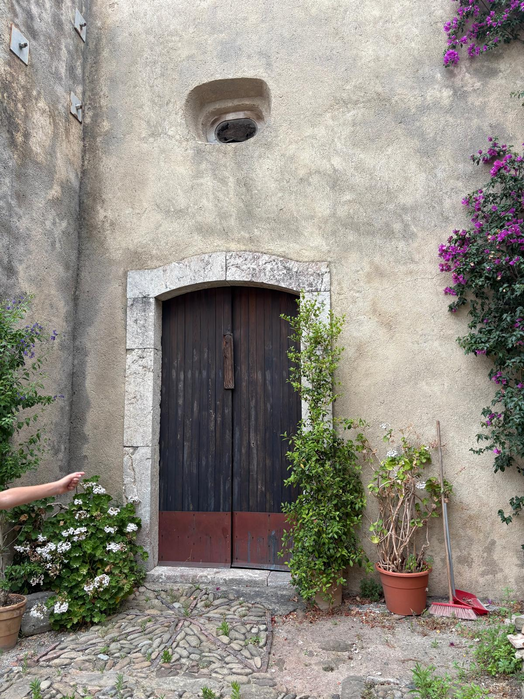
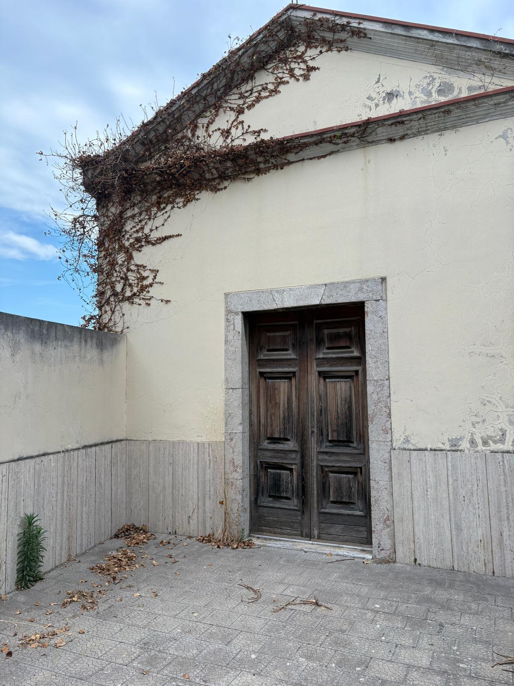
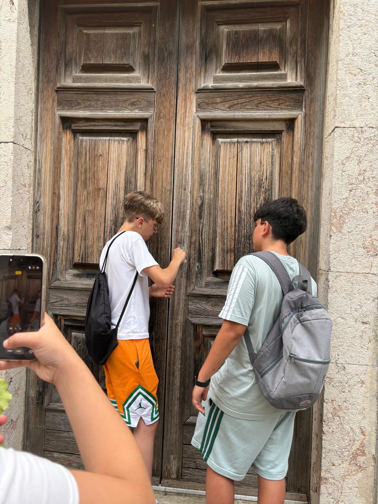
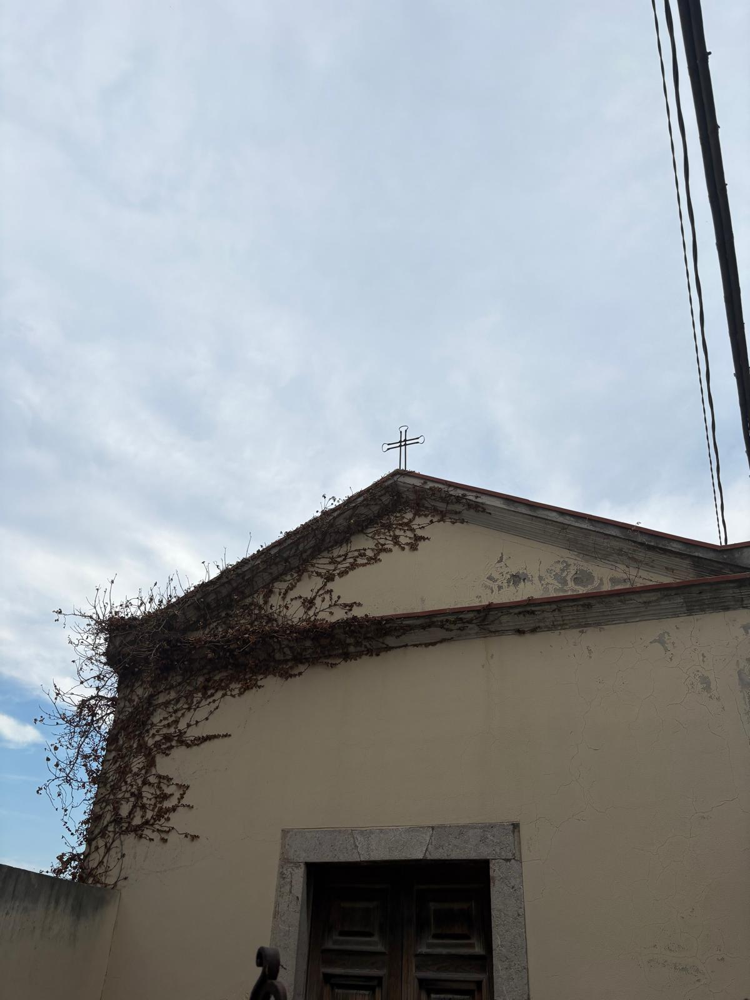
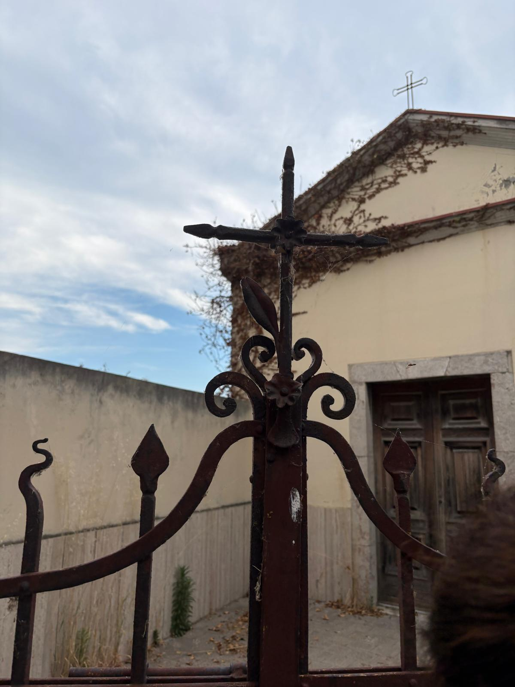
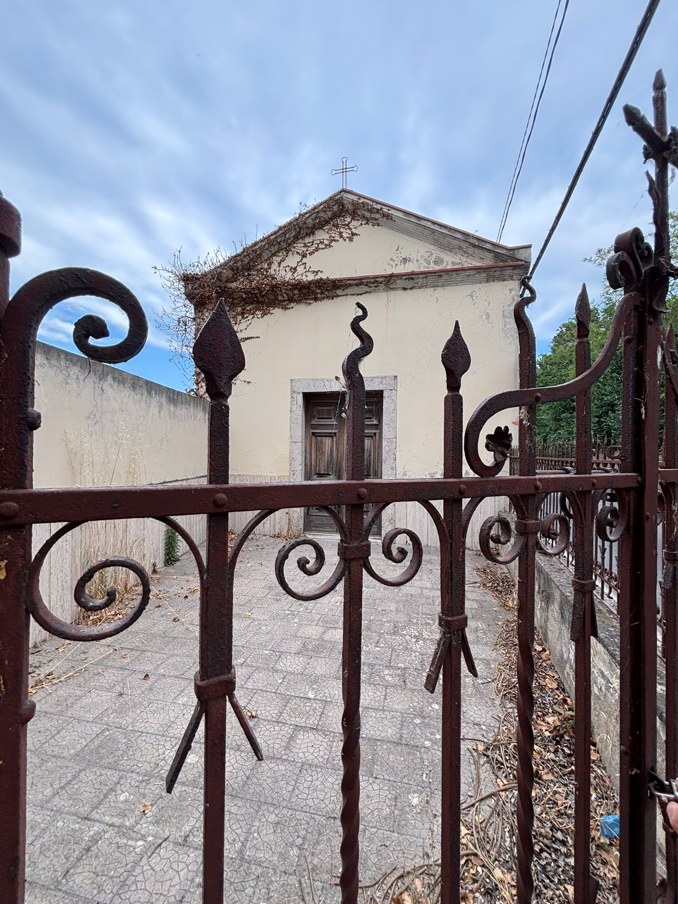
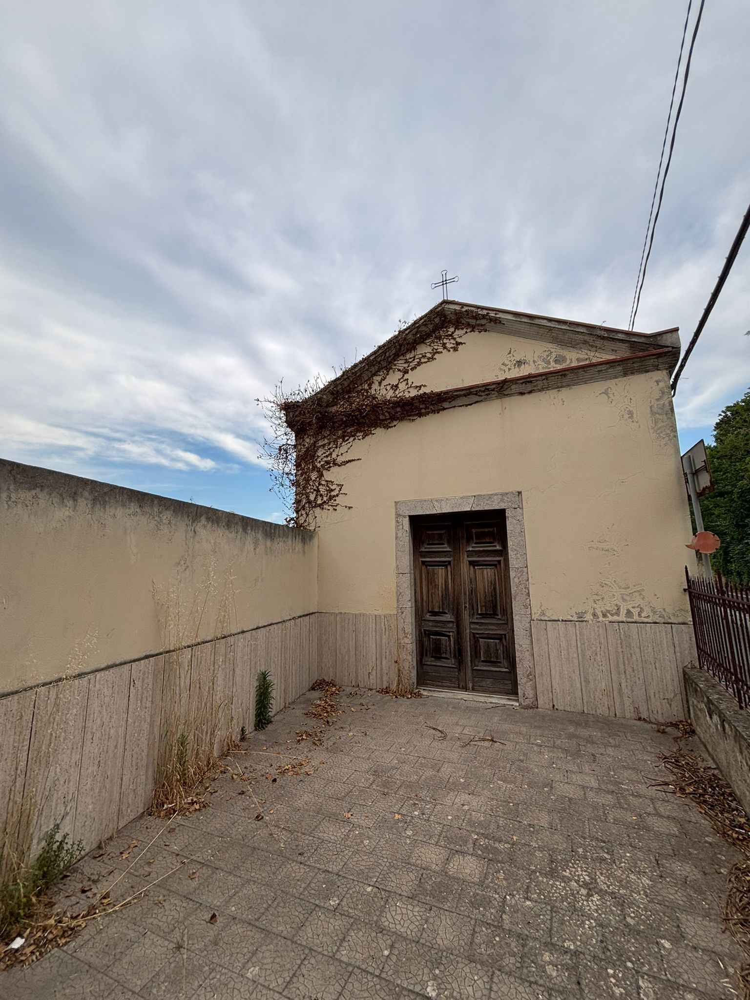
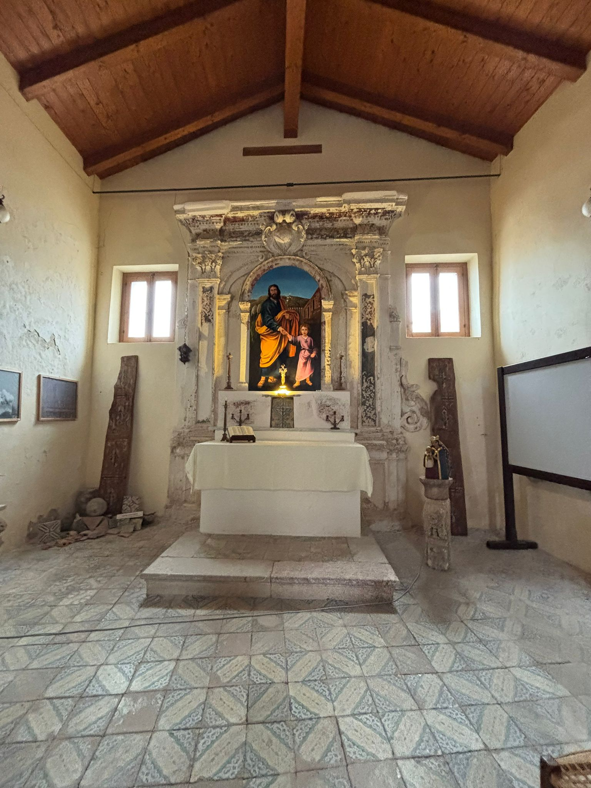
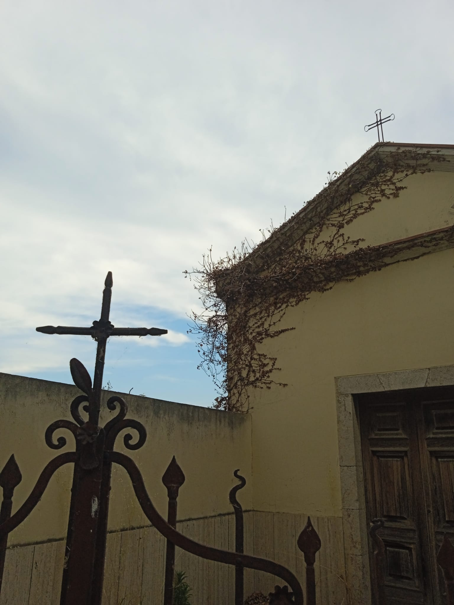
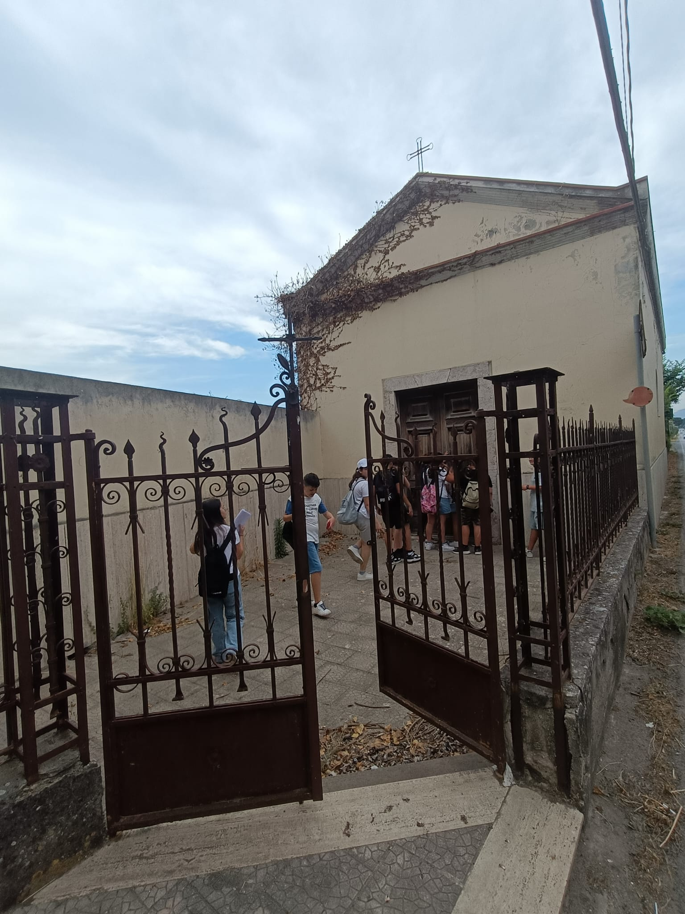

Scheda del luogo
Informazioni
essenziali
Il luogo
Da scoprire
insieme

Lungo l'antica strada che nel Medioevo collegava Palermo a Messina — un cammino percorso dai pellegrini diretti in Terra Santa — sorge una delle chiese più antiche del territorio: la Chiesa di San Giacomo. È citata già nel 1178, quando l'arcivescovo Nicola di Messina la donò all'Abbazia di Maniace; i documenti la descrivono come un «ospizio presso il mare», segno che le sue origini risalgono forse all'XI secolo.
Non era soltanto un luogo di preghiera, ma una vera stazione di sosta. Accanto alla chiesa c'era un ospizio dove i viaggiatori potevano riposare, e ogni anno, il 25 luglio — giorno di San Giacomo — i pellegrini si fermavano qui a venerare un'antica icona ritenuta miracolosa. Una piccola chiesa, ma in un punto di passaggio importantissimo.
Al suo interno custodisce una statua lignea del Seicento che raffigura San Giacomo il Maggiore, arrivata dalla cappella del Castello Cupane. Conserva ancora l'altare, il fonte battesimale, l'acquasantiera e pregevoli ferri battuti. Restaurata più volte nel tempo (le date del 1862 e del 1927 ne raccontano la lunga vita), resta una testimonianza preziosa della devozione e della storia del territorio.
Ogni 25 luglio, giorno di San Giacomo, i pellegrini diretti in Terra Santa si fermavano qui a venerare un'antica icona miracolosa: la chiesa sorgeva proprio lungo la via medievale tra Palermo e Messina.
La Chiesa di San Giacomo ricorda l'antica via dei pellegrini che attraversava il territorio.
Per approfondire → Pro Loco di AcquedolciImmagini
Galleria
fotografica










Storia del territorio